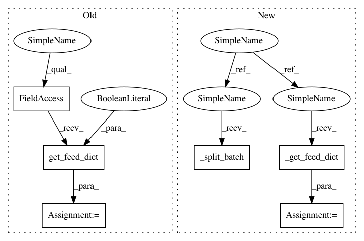

3436982b68daae3a0195226b72a3d7cd487793d7,basic/evaluator.py,F1Evaluator,get_evaluation,#F1Evaluator#Any#Any#,204
Before Change
def get_evaluation(self, sess, batch):
idxs, data_set = batch
assert isinstance(data_set, DataSet)
feed_dict = self.model.get_feed_dict(data_set, False)
global_step, yp, yp2, loss = sess.run([self.model.global_step, self.model.yp, self.model.yp2, self.model.loss], feed_dict=feed_dict)
y = data_set.data["y"]
if self.config.squash:
new_y = []
After Change
class F1Evaluator(LabeledEvaluator):
def get_evaluation(self, sess, batch):
idxs, data_set = self._split_batch(batch)
assert isinstance(data_set, DataSet)
feed_dict = self._get_feed_dict(batch)
global_step, yp, yp2, loss = sess.run([self.model.global_step, self.model.yp, self.model.yp2, self.model.loss], feed_dict=feed_dict)
y = data_set.data["y"]
if self.config.squash:
new_y = []
In pattern: SUPERPATTERN
Frequency: 3
Non-data size: 6
Instances
Project Name: wenwei202/iss-rnns
Commit Name: 3436982b68daae3a0195226b72a3d7cd487793d7
Time: 2016-10-11
Author: seominjoon@gmail.com
File Name: basic/evaluator.py
Class Name: F1Evaluator
Method Name: get_evaluation
Project Name: wenwei202/iss-rnns
Commit Name: 4114c934007391d352aadba223b5419b75bd8443
Time: 2016-10-26
Author: seominjoon@gmail.com
File Name: basic_cnn/evaluator.py
Class Name: AccuracyEvaluator
Method Name: get_evaluation
Project Name: wenwei202/iss-rnns
Commit Name: 762a04c13f984b2e8cda05c53e6e6d12230d4cf1
Time: 2016-10-06
Author: seominjoon@gmail.com
File Name: basic/evaluator.py
Class Name: F1Evaluator
Method Name: get_evaluation